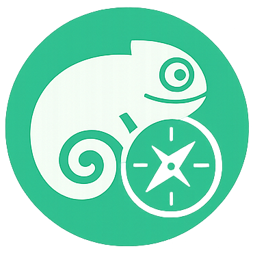

Hack Week 25 snapshot
Frozen as of the close of SUSE Hack Week 25 (December 5, 2025). The Space keeps the SUSE-branded look from that week.

Ask one question across SUSE, Rancher, K3s, RKE2, Longhorn, Harvester, NeuVector and Kubewarden documentation. Use it in the browser, or plug it into your AI tools over MCP.
This server speaks MCP over stdio. Clone the repo, run npm ci, then point your client at src/index.js. Replace /path/to with where you cloned it.
search_docsask_questionget_doc_sectionsummarize_docindex_documentationlist_doc_sourcesWhat the Ask tab returns, using the same snapshot you can search above.
This page is the entry point for the project. The live demo above searches a snapshot in your browser. The Spaces and the GitHub repository are listed here so the Hack Week snapshot and the current version stay easy to tell apart.
Frozen as of the close of SUSE Hack Week 25 (December 5, 2025). The Space keeps the SUSE-branded look from that week.
The maintained app, including keyword search in the browser and an optional live server. Same look as this page.
Both Spaces, this page, and the repository, grouped in one Hugging Face collection.
Not an official SUSE product. There is no demo video in the project playlist.